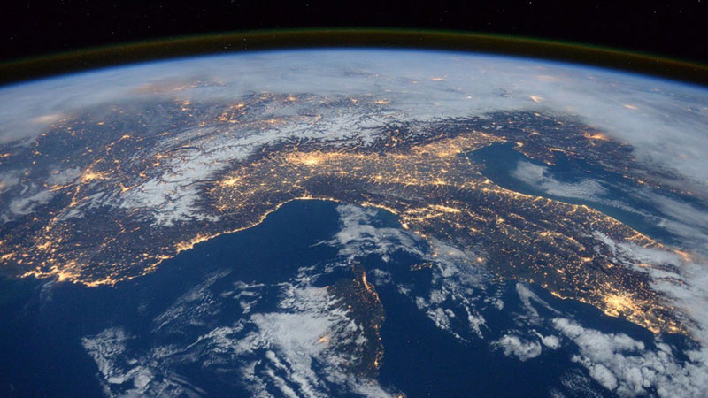

<div class="card-split">
	<div class="col-1-1">
		<article id="post-###">
			<div class="col-1-2">
				<a href="#" rel="bookmark" class="">
					
				</a>
			</div>
			<div class="col-1-2">
				<div class="card-split-text">
					<div class="col-1-1">
							<h5 class="blue">update</h5>
					</div>
					<div class="col-1-1 clear">
						<a href="#"><h2 class="split clear">Earth Now: Eath 5050</h2></a>
						<h2 class="secondary">UCLA College Luskin Endowment Inaugural Symposium</h2>
						<h4 class="date-sm blue">8.18.16</h4>
						<p class="small">The UC Conservation Genomics Consortium’s ongoing project, funded by the UC Catalyst Grant Program, is aiming to establish a genomics network across six UC campuses in order to support research, develop new analytical tools, host workshops, and more. The Consortium has created a website to keep track of the project, click on the link to find out more.</p>
						<ul class="col-10-12 tag-text">
								<li><a class="btn-tag" href="https://www.ioes.ucla.edu/">wildlife,&nbsp;</a>
</li>
								<li><a class="btn-tag" href="https://www.ioes.ucla.edu/">urban,&nbsp;</a>
</li>
								<li><a class="btn-tag" href="https://www.ioes.ucla.edu/">conservation,&nbsp;</a>
</li>
						</ul>
					</div>
				</div>
			</div>
		</article>
	</div>
</div>


